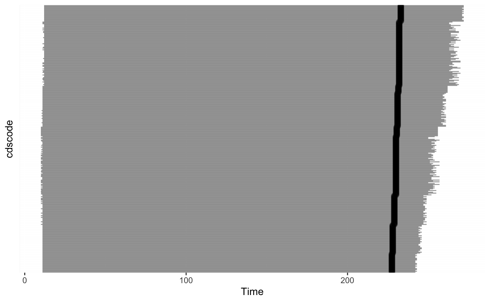
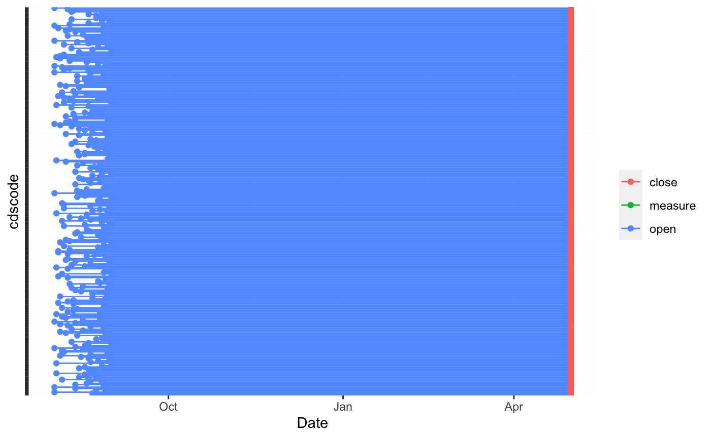

Temporal_Benvos.Rmdlibrary(rbenvo) #> #> Attaching package: 'rbenvo' #> The following object is masked from 'package:stats': #> #> filter
set.seed(342431) origin <- lubridate::as_date("2018-08-01") school_start <- origin+sample(1:31,size = nrow(LA_schools),replace = TRUE) measure_date <- lubridate::as_date("2019-05-01") close_date <- measure_date business_start_date <- origin + sample(-786:786,size = nrow(LA_restaurants),replace = TRUE) business_close_date <- business_start_date + sapply((lubridate::today()-business_start_date),function(x) sample(1:x,1)) RES <- LA_restaurants %>% mutate(open=business_start_date,close=business_close_date) schools <- LA_schools %>% mutate(open=school_start,measure=measure_date,close=close_date)
bdf <- benvo(schools, start_date_col="open", measurement_date="measure", stop_date_col="close",by='cdscode') %>% add_BEF(RES,bef_id = 'osm_id')
bdf %>% activate(RES) #> Active df: RES #> # A tibble: 1,271,598 x 9 #> cdscode measure open close open_RES close_RES osm_id Time #> <chr> <date> <date> <date> <date> <date> <chr> <drt> #> 1 196473… 2019-05-01 2018-08-25 2019-05-01 2016-06-06 2019-05-02 40939… 249 … #> 2 196473… 2019-05-01 2018-08-25 2019-05-01 2016-06-06 2020-06-04 42676… 249 … #> 3 196473… 2019-05-01 2018-08-25 2019-05-01 2016-06-07 2019-07-16 37435… 249 … #> 4 196473… 2019-05-01 2018-08-25 2019-05-01 2016-06-08 2019-07-16 43998… 249 … #> 5 196473… 2019-05-01 2018-08-25 2019-05-01 2016-06-08 2020-04-11 73915… 249 … #> 6 196473… 2019-05-01 2018-08-25 2019-05-01 2016-06-09 2018-09-27 42962… 33 … #> 7 196473… 2019-05-01 2018-08-25 2019-05-01 2016-06-09 2018-12-02 35672… 99 … #> 8 196473… 2019-05-01 2018-08-25 2019-05-01 2016-06-09 2019-12-02 43895… 249 … #> 9 196473… 2019-05-01 2018-08-25 2019-05-01 2016-06-09 2020-09-15 41408… 249 … #> 10 196473… 2019-05-01 2018-08-25 2019-05-01 2016-06-10 2020-02-01 42797… 249 … #> # … with 1,271,588 more rows, and 1 more variable: exposure_lag <drtn>
plot(bdf) #> Don't know how to automatically pick scale for object of type difftime. Defaulting to continuous.

plot(bdf,'time')
